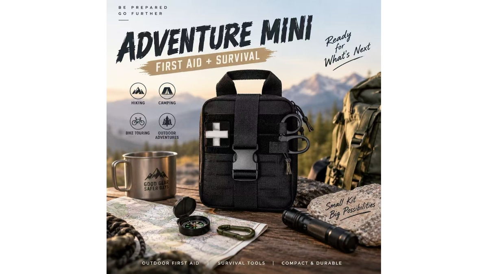

First Aid + Survival in One Compact Kit
SEP 10, 2026

Outdoor emergencies do not always begin with a serious injury.
A small cut on the trail may need a bandage. A sudden change in weather may call for an emergency blanket or rain poncho. A delayed return from a hike can make a flashlight, whistle or fire starter just as useful as traditional first aid supplies.
That is the idea behind this compact first aid and survival kit.
Instead of carrying a separate outdoor first aid kit and survival kit, the Adventure Mini brings both functions into one portable pack. Medical supplies are combined with practical outdoor essentials such as a flashlight, whistle, emergency blanket, rain poncho, fire starter and other survival tools.
The compact 600D Oxford pouch also features organized compartments, two-way zippers, a rip-away design and MOLLE attachment, making it suitable for hiking, camping, backpacking, road trips and outdoor emergency preparedness.
For outdoor retailers and distributors, this type of product also sits naturally between two familiar categories: first aid and survival gear.
One compact pack. Two practical functions.
Looking for a custom first aid and survival kit for your market? GoSafeMed supports small-batch, OEM and custom configurations for retailers and distributors.